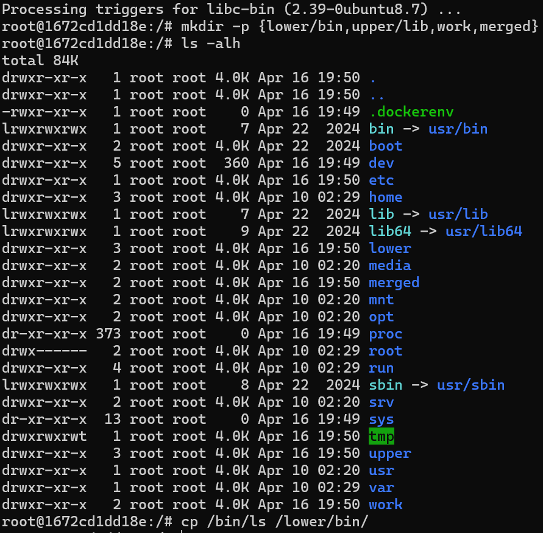
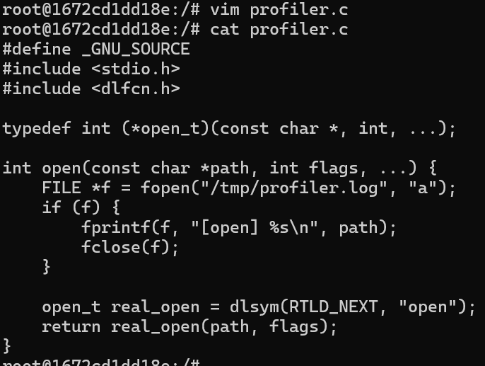
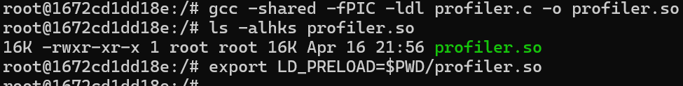
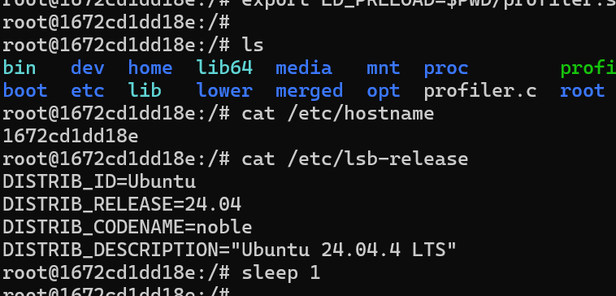
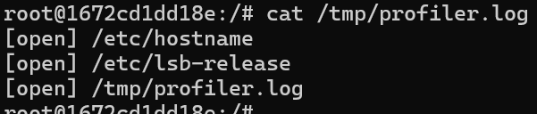

ELF subversion and userland instrumentation: "hacking" the runtime
Linux processes often seem impermeable. Yet powerful userland instrumentation techniques exist. They let you observe, and even silently hijack, a running process without ever touching its source code or disk binaries.
1. The concept: poisoning and LD_PRELOAD
The attack (or instrumentation, depending on your point of view) relies on how Linux loads dynamic executables (ELF). When a program calls a system function like open(), it depends on libc.
Using the LD_PRELOAD environment variable, an attacker can force the dynamic loader to load a custom shared library before the standard libc. The result? calls are hooked (partial syscall tracing), acting like a MITM inside the process memory space.
2. Preparing the ground with OverlayFS
To experiment cleanly without changing the host system, we use OverlayFS, the layered filesystem used by Docker.
Let's prepare the environment. In an Ubuntu Docker container, we create a file structure that mimics OverlayFS.
Here we isolate our executable (/bin/ls) in the lowerdir. OverlayFS will merge this view with our future malicious library in the upperdir. That creates a controlled environment ideal for the PoC.
3. Anatomy of the attack (PoC)
Let's move to practice. The goal is to build a stealthy profiler that logs every file opened by the infected process.
We take a hook implementation from the internet (there are many), written in C :

We then compile this code into a shared library (.so) and inject it using LD_PRELOAD:

To understand LD_PRELOAD quickly : it tells the dynamic loader to load one shared library before all others. By placing our malicious code there, we can intercept calls to selected functions (like open()) and run our own logic before forwarding to the original implementation.
Now run some completely normal-looking commands:

From the attacker's or analyst's perspective, the trap is set. The proof is in the log file generated quietly in the background:

The system has been subverted: every open() call is intercepted, recorded, then passed to the legitimate function. The illusion for the user is perfect.
4. Why is this so dangerous?
What makes this technique (often called PLT poisoning) so dangerous is its disk invisibility. The original binary (/bin/ls) stays intact. Its hashes (MD5/SHA256) remain unchanged. The linux kernel is untouched. The alteration happens only at runtime, in volatile memory.
5. Conclusion
This demonstration shows the power of hijacking the dynamic linker. Attackers can use it to build stealthy userland rootkits.
Monitoring tools and EDR solutions have historically relied on the same interception concepts (now often via eBPF, which is more robust and kernel-side) to trace suspicious system calls and detect anomalies in real time.